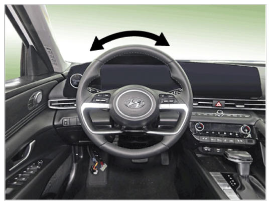

LEMON Manuals
: Even more car manuals for everyone: 1960-2025
Home
>>
Hyundai
>>
2022
>>
Elantra N Line, Standard Trans
>>
Repair and Diagnosis (Single Page)
>>
Steering
>>
Electronic Steering
>>
Steering System - General Information (Except HEV)
>>
Repair Procedures
>>
Service Adjustment Procedure
>>
Steering Wheel Play Inspection
Steering Wheel Play Inspection
Turn the steering wheel so that the front wheels can face straight ahead.
Measure the distance the steering wheel can be turned without moving the front wheels.
Standard value:
0 - 30 mm (1.18 in.)

Courtesy of HYUNDAI MOTOR AMERICA
If the play exceeds standard value, inspect the steering column, shaft, and linkages.